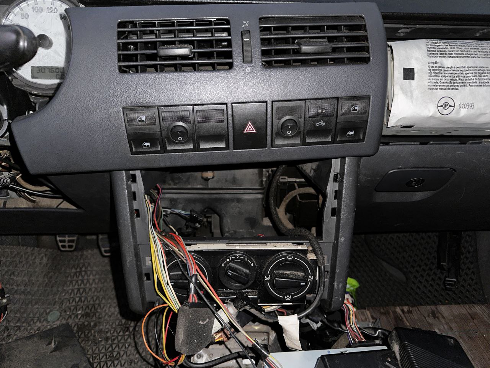
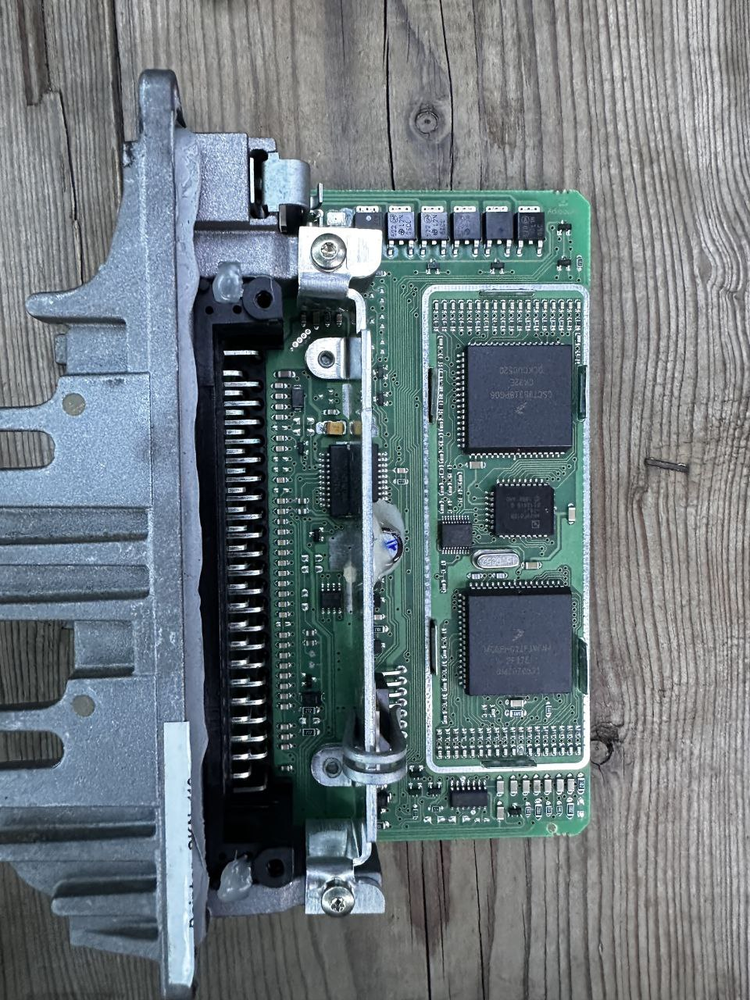

這不只是配鑰匙，更是一場電子解剖
在彰化線西的海邊，這台經典的福斯皮卡 VW Pointer 面臨鑰匙全丟。老車案件建議先確認車款年份、鑰匙狀態、停放環境與是否急需移車，讓到場評估更有效率。
現場紀錄：老車鑰匙全丟到場評估

步驟一：中控系統拆解定位

步驟二：車況確認
為什麼 VW Pointer 救援難度極高？
- 車況說明： 需依車況確認可行處理方式，公開頁面不揭露硬體細節或操作流程。
- 功能確認： 使用車系設備完成安全設定與交車前功能確認。
在彰化線西的海邊，這台經典的福斯皮卡 VW Pointer 面臨鑰匙全丟。老車案件建議先確認車款年份、鑰匙狀態、停放環境與是否急需移車，讓到場評估更有效率。

步驟一：中控系統拆解定位

步驟二：車況確認